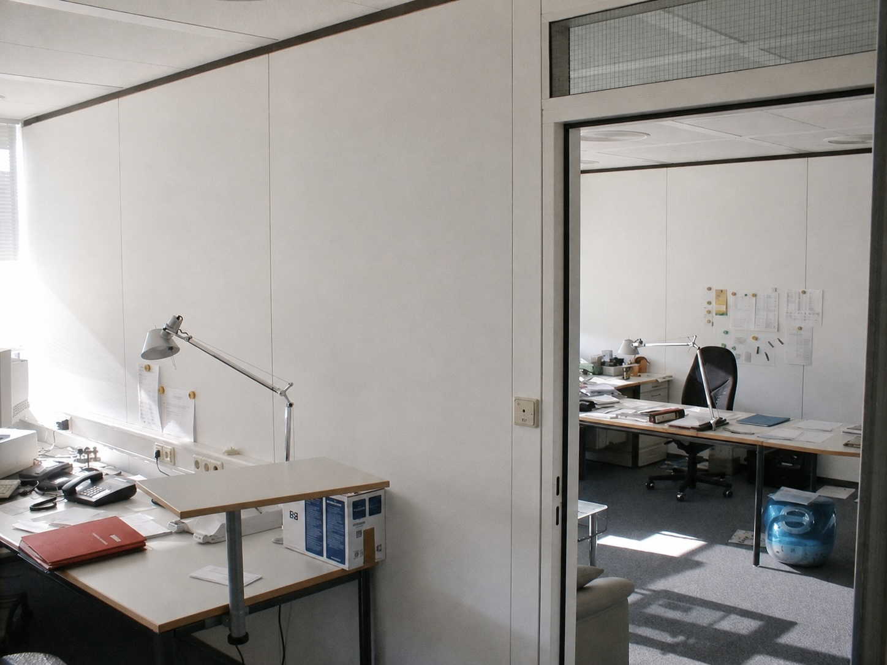
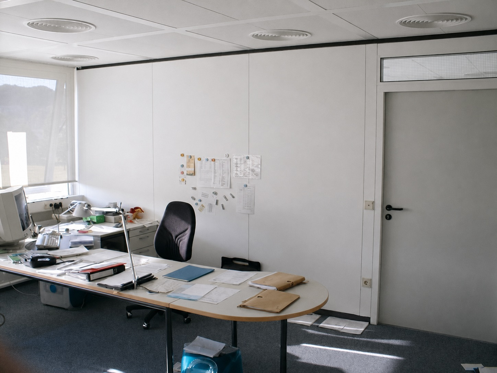
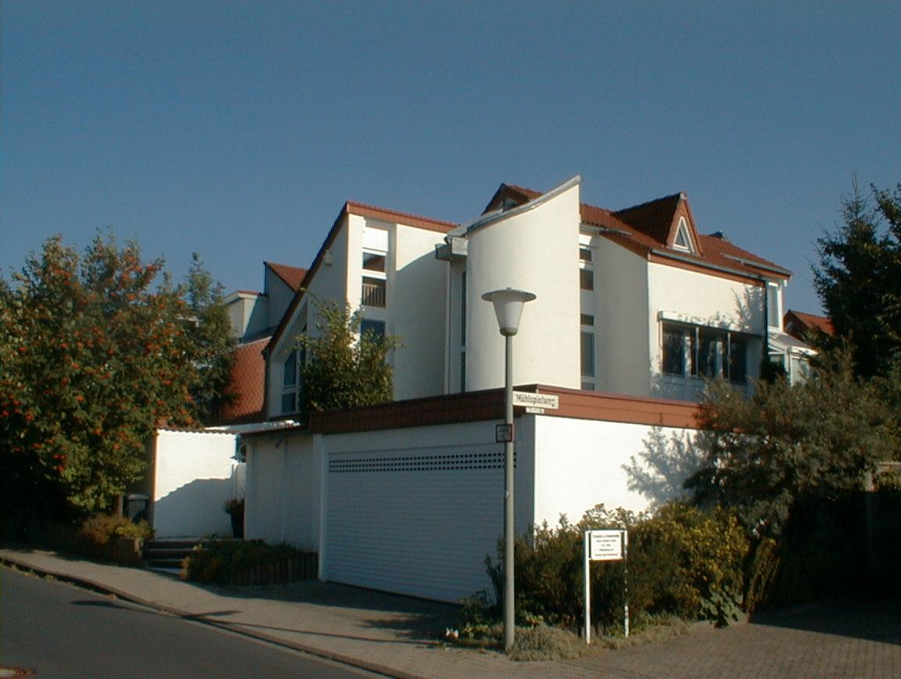

Essen war eine der schönsten und besten Episoden auf meinem Lebensweg mit einer Vorgeschichte. Die hatte mit Marburg zu tun.
Nach drei Jahren in Marburg wollte ich von dort weg. Die Marburger Kinderonkologie war klein und bedeutungslos, die Atmosphäre zwischen Seyberth und mir war inzwischen vergiftet, und mein Labor befand sich immer noch in Heidelberg. Auf Dauer war das keine vernünftige Konstellation. Ich wollte an ein großes kinderonkologisches Zentrum, an dem ich klinisch arbeiten und gleichzeitig meine Forschung fortsetzen konnte.
Also bewarb ich mich initiativ an mehreren großen Zentren, darunter Berlin, Münster, Wien und Essen. Ich entschied mich für Essen und wurde dort Oberarzt in der Kinderonkologie. Mein neuer Chef Werner Havers machte mir ein Angebot, das für beide Seiten vernünftig war. Das Forschungslabor der Kinderonkologie war altgediegen und auf die Anforderungen der modernen Molekulargenetik nicht vorbereitet. Havers wollte das ändern. Auch deshalb, weil Angelika Eggert, sein wissenschaftliches Ziehkind, damals als Postdoc in den USA arbeitete und nach ihrer Rückkehr in Essen ein ordentliches Arbeitsumfeld vorfinden sollte. Ich hatte schon mehrere Labors eingerichtet und wusste, was dafür nötig war. Also fiel diese Aufgabe mir zu.
Im Gegenzug konnte ich mir an einem der größten kinderonkologischen Zentren Deutschlands das klinische Rüstzeug erwerben, das man zur Leitung einer solchen Einrichtung brauchte. Ich sollte Oberarzt der Station werden, mein Labor von Heidelberg nach Essen holen und mich wissenschaftlich wie klinisch so weiter qualifizieren, dass ich mich nach einigen Jahren mit Aussicht auf Erfolg auf ein Ordinariat bewerben konnte. Ein guter Deal. Vor allem war es ein offener Deal. Werner Havers wusste, dass Essen für mich nicht die Endstation sein sollte und dass ich mich später auf einen Lehrstuhl bewerben würde.
So begann ich mich nach einigen Jahren mit seinem Wissen auf Ordinariate zu bewerben. Das war keineswegs selbstverständlich. Einige meiner späteren Oberärzte in Göttingen handhabten solche Dinge anders. Zunächst sollte mein Weg zurück nach Heidelberg führen. Über diese ausgeschlagene Stelle habe ich an anderer Stelle berichtet. Nachdem die Heidelberger Fakultät sich gegen mich entschieden hatte, erhielt ich den Ruf nach Göttingen. Dort konnte ich nun genau das verwirklichen, worauf ich über viele Jahre hingearbeitet hatte: eine große Kinderklinik leiten und zugleich eine leistungsfähige molekularbiologische Forschung aufbauen. Im Mai 2002 trat ich meinen Dienst an.
Meine Familie blieb zunächst in Essen. Ich bezog ein Apartment im Gästehaus der Universität im Justus-von-Liebig-Weg auf dem Nordcampus. Das Haus lag recht nett im Grünen und war für die Übergangszeit völlig ausreichend. Jeden Morgen schlüpfte ich aus meinem Apartment im Erdgeschoss nach draußen und ließ die Tür nur angelehnt. Dann lief ich auf der Deppoldshäuser Straße nach Norden und weiter in den Wald. Nach dem Laufpensum gab es Kaffee und eine Dusche, anschließend fuhr ich die kurze Strecke zur Kinderklinik.
Der Sommer 2002 war angenehm. Schon am frühen Morgen lag Wärme in der Luft. Ich saß im kurzen Hemd in meinem silbernen Nissan Primera, das Fenster heruntergekurbelt, und hörte Bruce Springsteen oder Tom Petty. Die Fahrt vom Gästehaus zur Klinik erinnerte mich manchmal an San Francisco, als ich morgens durch den Golden Gate Park zur Arbeit gefahren war. Göttingen war nicht San Francisco, und der Nordcampus war nicht der Golden Gate Park. Aber das damalige Lebensgefühl war ähnlich. Ich hatte meinen Lauf hinter mir, meinen Kaffee intus, war frisch geduscht und fuhr voller Tatendrang zur Klinik. Mir ging es gut. Ich würde das als Chef schon schaffen.
Ganz selbstverständlich war mein Amtsantritt allerdings nicht. Ich war die erste Wahl des damaligen Vorstands mit dem Dekan Manfred Dröse und dem Ärztlichen Direktor Jekabs Leititis gewesen, nicht aber die der Fakultät. Dort hatte mein Mitbewerber offenbar den besseren Eindruck hinterlassen. Ein Mitglied der Findungskommission hatte beobachtet, wie er sich an seiner damaligen Wirkstätte besonders liebevoll um die Frühgeborenen kümmerte. Leititis erzählte mir später davon. Es war offenbar ein überzeugender Auftritt gewesen.
Mit fliegenden Fahnen wurde ich in Göttingen deshalb nicht empfangen. Im Nachhinein weiß ich, dass es noch einen zweiten Grund gab. Max Lakomek, der die Klinik bis zu meinem Amtsantritt kommissarisch geleitet hatte, hatte sich ebenfalls um die Stelle beworben. Das hätte mir zu denken geben sollen. Mit mehr Erfahrung wäre ich gegenüber einem Mitarbeiter, der selbst auf meinem Stuhl hatte sitzen wollen, vorsichtiger gewesen. Später erwies er sich als Maulwurf.
Bei einer meiner ersten Besichtigungen durch die alten Laborräume begleitete mich Arnulf Pekrun, damals Oberarzt der Kinderonkologie. Diese Labors sollten für viel Geld vollständig umgebaut und in ein modernes molekularbiologisches Forschungszentrum verwandelt werden. Während wir durch die Räume gingen, spürte ich, wie Pekrun mich skeptisch musterte. Begeisterung sieht anders aus. Aber vielleicht ist eine gewisse Zurückhaltung auch normal, wenn ein neuer Chef kommt, große Pläne verkündet und manches umkrempeln will. Man weiß schließlich nicht, was von der bisherigen Ordnung und von der eigenen Bedeutung übrig bleiben wird.
An meinen ersten Arbeitstag kann ich mich erstaunlicherweise kaum erinnern. Wahrscheinlich habe ich eine Ansprache gehalten. Sicher bin ich mir nicht. Meine Antrittsvorlesung ist mir dagegen in Erinnerung geblieben. Sie war beschämend – allerdings weniger wegen meines Vortrags als wegen des Auditoriums. Die meisten Chefärzte hatten an diesem Tag Wichtiges zu tun und blieben weg. Es war ein Stellvertreterkrieg gegen den Vorstand, ausgetragen auf den leeren Stühlen meiner Antrittsvorlesung. Feiglinge. Manfred Schwab, mein früherer Chef, war dagegen eigens aus Heidelberg angereist. Danach ging es weiter mit Business as usual.

Ich erhielt ein nagelneues Büro, das nach meinen Wünschen eingerichtet worden war. Gleichzeitig begann der Umbau der Labors. Fast täglich ging ich hinüber und sah mir an, wie aus den alten Räumen Schritt für Schritt das Forschungszentrum entstand, das ich mir vorgestellt hatte. Rund 600 Quadratmeter standen schließlich zur Verfügung. Klinik und Forschung sollten hier gleichberechtigt nebeneinander stehen: eine ausgezeichnete Kinderklinik und ein ausgezeichnetes molekularbiologisches Labor. Genau dafür war ich nach Göttingen gekommen.

Bis zum Umzug fuhr ich an den Wochenenden zurück nach Essen. Hilde und die Kinder mussten ihren Alltag dort zunächst allein weiterführen, während wir in Göttingen nach einem Haus suchten. Jan und Kaja gefiel der bevorstehende Wechsel anfangs nicht besonders. Sie sollten ihren Freundeskreis in Essen zurücklassen, und für Kinder ist die Aussicht auf die große berufliche Chance ihres Vaters nur begrenzt tröstlich. Hilde war mit dem Wechsel einverstanden. Nach den vielen Umzügen unseres gemeinsamen Lebens war ein neuer Anfang für sie nichts Außergewöhnliches mehr. Wir würden uns eingewöhnen, so wie wir uns auch an allen anderen Orten eingewöhnt hatten.

Im Göttinger Tageblatt fanden wir schließlich eine Anzeige der Familie Reimer. Sie wollte sich vergrößern und verkaufte ihr Haus im Mühlspielweg 10 in Nikolausberg. Das Haus war architektonisch ungewöhnlich und entsprach genau unserem Geschmack: modern, viele Erker, ungewöhnliche Winkel und ein Turm, in dem sich das Treppenhaus befand. Auch Jan und Kaja konnten sich damit anfreunden. Ein erstes eigenes Haus mit Garten und einem Spielhaus auf der Wiese hatte schließlich einiges zu bieten, selbst wenn es in Göttingen stand und nicht in Essen.
Im Spätsommer 2003 zogen wir ein. Der Umzug selbst verlief unspektakulär. Die Universität bezahlte ihn, das Einräumen blieb trotzdem an uns hängen und war wie immer nicht besonders prickelnd. Aber irgendwann standen die Möbel, die Kartons verschwanden, und wir waren angekommen.
Ich hatte nun eine große Kinderklinik, ein neues Büro, ein molekularbiologisches Labor im Aufbau und ein außergewöhnliches Haus in Nikolausberg. Meine Familie war bei mir, der Jahrhundertsommer lag über Göttingen, und morgens fuhr ich mit Springsteen oder Tom Petty zur Arbeit.
Alles war gut. Jedenfalls empfand ich es damals so.